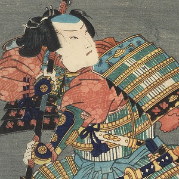
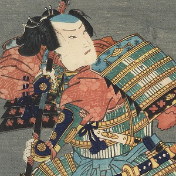

Tamamo-no-Mae était décrit comme la femme la plus belle et la plus intelligente du Japon. Elle avait énormément de connaissances malgré son apparence juvénile (environ 20 ans).
Elle était la favorite de l'empereur qui était fou amoureux d'elle. Cependant, l'empereur et son fils vinrent à tomber malade et personne ne put soigner cette maladie ou même en
comprendre la cause. Un exorciste réussi cependant à comprendre que la cause de cette maladie n'était autre que Tamamo-no-Mae qui était en réalité un Kyubi no Kitsune (renard à neuf queues).
Après que son identité soit découverte Tamamo-no-Mae s'enfuit du château. Elle fut pourchasser et tuer par Miura-no-Suke, un des meilleurs guerriers de l'empereur.
Après sa mort l'âme de Tamamo-no-Mae fut sceller dans une pierre qui tue ceux qui la touchent.
Ce n'était pas le premier méfait de Tamamo-no-Mae. Elle est aussi responsable de la chute de la dynastie Zhou, une dynastie d'empereurs chinois et d'une guerre civile en Inde.
Voici l'histoire de Tamamo-no-Mae :
Mythe original :
 

Interprétation dans la pop culture :

Tamamo-no-Mae est très représenté dans la pop culture japonaise, sa représentation la plus connue est celle de Fate Extra et Fate Grand order. Dans Fate extra elle est amoureuse du personnage principal que celui-ci soit un homme ou une femme mais malgré cela elle met beaucoup de temps à s'ouvrir réellement et à parler de qui elle est vraiment. Dans fate grand order elle est la fille de Amaterasu (Déesse du Soleil t impératrice des Dieux d'Izumo) et malgré son amour pour le personnage principal elle ne pense être digne de ce dernier.